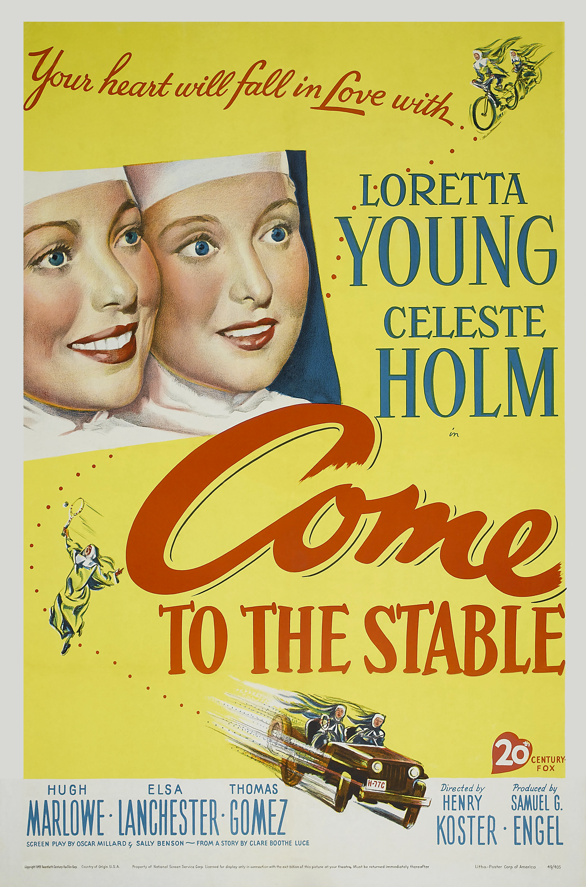

Come to the Stable
22nd Academy Awards
(Oscars 1950)
7 Nominations, 0 Awards
| Nominations | ||
|---|---|---|
| Category | Nominees | Result |
| Actress | Loretta Young | Nominated |
| Actress in a Supporting Role | Celeste Holm | Nominated |
| Actress in a Supporting Role | Elsa Lanchester | Nominated |
| Writing (Motion Picture Story) | Clare Boothe Luce | Nominated |
| Cinematography (Black-and-White) | Joseph LaShelle | Nominated |
| Art Direction (Black-and-White) | Joseph C. Wright, Lyle Wheeler, Paul S. Fox, and Thomas Little | Nominated |
| Music (Song) "Through A Long And Sleepless Night" |
Alfred Newman and Mack Gordon | Nominated |